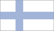
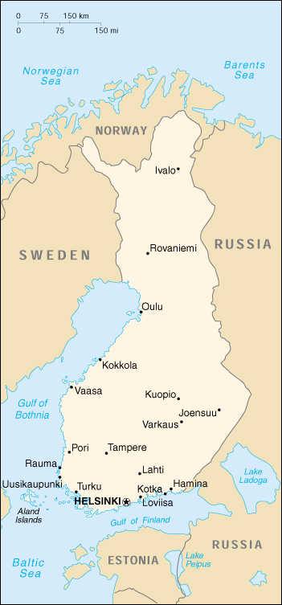

{kind=link}


| Finland |  |
|
|  | |
| Introduction |
Background: Ruled by Sweden from the 12th to the 19th centuries and by Russia from 1809, Finland finally won its independence in 1917. During World War II, it was able to successfully defend its freedom and fend off invasions by the Soviet Union and Germany. In the subsequent half century, the Finns have made a remarkable transformation from a farm/forest economy to a diversified modern industrial economy; per capita income is now on par with Western Europe. As a member of the European Union, Finland was the only Nordic state to join the euro system at its initiation in January 1999.
| Geography |
Location: Northern Europe, bordering the Baltic Sea, Gulf of Bothnia, and Gulf of Finland, between Sweden and Russia
Geographic coordinates: 64 00 N, 26 00 E
Map references: Europe
Area:
total:
337,030 sq km
land:
305,470 sq km
water:
31,560 sq km
Area - comparative: slightly smaller than Montana
Land boundaries:
total:
2,628 km
border countries:
Norway 729 km, Sweden 586 km, Russia 1,313 km
Coastline: 1,126 km (excludes islands and coastal indentations)
Maritime claims:
contiguous zone:
6 nm
continental shelf:
200-m depth or to the depth of exploitation
exclusive fishing zone:
12 nm
territorial sea:
12 nm (in the Gulf of Finland - 3 nm)
Climate: cold temperate; potentially subarctic, but comparatively mild because of moderating influence of the North Atlantic Current, Baltic Sea, and more than 60,000 lakes
Terrain: mostly low, flat to rolling plains interspersed with lakes and low hills
Elevation extremes:
lowest point:
Baltic Sea 0 m
highest point:
Haltiatunturi 1,328 m
Natural resources: timber, copper, zinc, iron ore, silver
Land use:
arable land:
8%
permanent crops:
0%
permanent pastures:
0%
forests and woodland:
76%
other:
16% (1993 est.)
Irrigated land: 640 sq km (1993 est.)
Natural hazards: NA
Environment - current issues: air pollution from manufacturing and power plants contributing to acid rain; water pollution from industrial wastes, agricultural chemicals; habitat loss threatens wildlife populations
Environment - international agreements:
party to:
Air Pollution, Air Pollution-Nitrogen Oxides, Air Pollution-Sulphur 85, Air Pollution-Sulphur 94, Air Pollution-Volatile Organic Compounds, Antarctic-Environmental Protocol, Antarctic Treaty, Biodiversity, Climate Change, Desertification, Endangered Species, Environmental Modification, Hazardous Wastes, Law of the Sea, Marine Dumping, Marine Life Conservation, Nuclear Test Ban, Ozone Layer Protection, Ship Pollution, Tropical Timber 83, Tropical Timber 94, Wetlands, Whaling
signed, but not ratified:
Air Pollution-Persistent Organic Pollutants, Climate Change-Kyoto Protocol
Geography - note: long boundary with Russia; Helsinki is northernmost national capital on European continent; population concentrated on small southwestern coastal plain
| People |
Population: 5,167,486 (July 2000 est.)
Age structure:
0-14 years:
18% (male 478,497; female 459,646)
15-64 years:
67% (male 1,747,738; female 1,712,058)
65 years and over:
15% (male 295,177; female 474,370) (2000 est.)
Population growth rate: 0.17% (2000 est.)
Birth rate: 10.8 births/1,000 population (2000 est.)
Death rate: 9.73 deaths/1,000 population (2000 est.)
Net migration rate: 0.58 migrant(s)/1,000 population (2000 est.)
Sex ratio:
at birth:
1.04 male(s)/female
under 15 years:
1.04 male(s)/female
15-64 years:
1.02 male(s)/female
65 years and over:
0.62 male(s)/female
total population:
0.95 male(s)/female (2000 est.)
Infant mortality rate: 3.82 deaths/1,000 live births (2000 est.)
Life expectancy at birth:
total population:
77.41 years
male:
73.74 years
female:
81.2 years (2000 est.)
Total fertility rate: 1.7 children born/woman (2000 est.)
Nationality:
noun:
Finn(s)
adjective:
Finnish
Ethnic groups: Finn 93%, Swede 6%, Lapp 0.11%, Roma 0.12%, Tatar 0.02%
Religions: Evangelical Lutheran 89%, Greek Orthodox 1%, none 9%, other 1%
Languages: Finnish 93.4% (official), Swedish 5.9% (official), small Lapp- and Russian-speaking minorities
Literacy:
definition:
age 15 and over can read and write
total population:
100% (1980 est.)
male:
NA%
female:
NA%
| Government |
Country name:
conventional long form:
Republic of Finland
conventional short form:
Finland
local long form:
Suomen Tasavalta
local short form:
Suomi
Data code: FI
Government type: republic
Capital: Helsinki
Administrative divisions: 6 provinces (laanit, singular - laani); Aland, Etela-Suomen Laani, Ita-Suomen Laani, Lansi-Suomen Laani, Lappi, Oulun Laani
Independence: 6 December 1917 (from Russia)
National holiday: Independence Day, 6 December (1917)
Constitution: 17 July 1919
Legal system: civil law system based on Swedish law; Supreme Court may request legislation interpreting or modifying laws; accepts compulsory ICJ jurisdiction, with reservations
Suffrage: 18 years of age; universal
Executive branch:
chief of state:
President Tarja HALONEN (since 1 March 2000)
head of government:
Prime Minister Paavo LIPPONEN (since 13 April 1995) and Deputy Prime Minister Sauli NIINISTO (since 13 April 1995)
cabinet:
Council of State or Valtioneuvosto appointed by the president, responsible to Parliament
elections:
president elected by popular vote for a six-year term; election last held 6 February 2000 (next to be held NA February 2006); prime minister and deputy prime minister appointed from the majority party by the president after parliamentary elections
election results:
Tarja HALONEN elected president; percent of vote - Tarja HALONEN (SDP) 51.6%, Esco AHO (Kesk) 48.4%
note:
government coalition - SFP, Kok, Leftist Alliance (People's Democratic Union and Democratic Alternative), SFP, and Green Union
Legislative branch:
unicameral Parliament or Eduskunta (200 seats; members are elected by popular vote on a proportional basis to serve four-year terms)
elections:
last held 21 March 1999 (next to be held NA March 2003)
election results:
percent of vote by party - SDP 22.9%, Kesk 22.5%, Kok 21.0%, Leftist Alliance (Communist) 10.9%, SFP 5.1%, Green Union 7.2%, SKL 4.2%; seats by party - SDP 51, Kesk 48, Kok 46, Leftist Alliance (Communist) 20, SFP 11, Green Union 11, SKL 10, other 3
Judicial branch: Supreme Court or Korkein Oikeus, judges appointed by the president
Political parties and leaders: Center Party or Kesk [Esko AHO]; Ecological Party or EPV [Eugen PARKATTI]; Finnish Christian Union or SKL [C. P. Bjarne KALLIS]; Green Union [Satu HASSI]; Leftist Alliance (Communist) composed of People's Democratic League and Democratic Alternative [Claes ANDERSSON]; Liberal People's Party or LKP [Pekka RYTILA]; National Coalition (conservative) Party or Kok [Sauli NIINISTO]; Rural Party or SMP [Raimo VISTBACKA]; Social Democratic Party or SDP [Paavo LIPPONEN]; Swedish People's Party or SFP [(Johan) Ole NORRBACK]; Young Finns [Risto PENTTILA]
Political pressure groups and leaders: Communist Workers Party [Timo LAHDENMAKI]; Constitutional Rightist Party; Finnish Communist Party-Unity [Yrjo HAKANEN]; Finnish Pensioners Party
International organization participation: AfDB, AsDB, Australia Group, BIS, CBSS, CCC, CE, CERN, EAPC, EBRD, ECE, EIB, EMU, ESA, EU, FAO, G- 9, IADB, IAEA, IBRD, ICAO, ICC, ICFTU, ICRM, IDA, IEA, IFAD, IFC, IFRCS, IHO, ILO, IMF, IMO, Inmarsat, Intelsat, Interpol, IOC, IOM, ISO, ITU, NAM (guest), NC, NEA, NIB, NSG, OAS (observer), OECD, OPCW, OSCE, PCA, PFP, UN, UNCTAD, UNESCO, UNFICYP, UNHCR, UNIDO, UNIFIL, UNIKOM, UNMIBH, UNMIK, UNMOGIP, UNMOP, UNTSO, UPU, WEU (observer), WFTU, WHO, WIPO, WMO, WToO, WTrO, ZC
Diplomatic representation in the US:
chief of mission:
Ambassador Jaakko Tapani LAAJAVA
chancery:
3301 Massachusetts Avenue NW, Washington, DC 20008
telephone:
[1] (202) 298-5800
FAX:
[1] (202) 298-6030
consulate(s) general:
Los Angeles and New York
Diplomatic representation from the US:
chief of mission:
Ambassador Eric EDELMAN
embassy:
Itainen Puistotie 14A, FIN-00140, Helsinki
mailing address:
APO AE 09723
telephone:
[358] (9) 171931
FAX:
[358] (9) 174681
Flag description: white with a blue cross that extends to the edges of the flag; the vertical part of the cross is shifted to the hoist side in the style of the Dannebrog (Danish flag)
| Economy |
Economy - overview: Finland has a highly industrialized, largely free-market economy, with per capita output roughly that of the UK, France, Germany, and Italy. Its key economic sector is manufacturing - principally the wood, metals, engineering, telecommunications, and electronics industries. Trade is important, with exports equaling more than one-third of GDP. Except for timber and several minerals, Finland depends on imports of raw materials, energy, and some components for manufactured goods. Because of the climate, agricultural development is limited to maintaining self-sufficiency in basic products. Forestry, an important export earner, provides a secondary occupation for the rural population. The economy has come back from the recession of 1990-92, which had been caused by economic overheating, depressed foreign markets, and the dismantling of the barter system between Finland and the former Soviet Union. Rapidly increasing integration with Western Europe - Finland was one of the 11 countries joining the euro monetary system (EMU) on 1 January 1999 - will dominate the economic picture over the next several years. Growth in 2000 will probably be at the same level as in 1999, enough to continue the decline in unemployment from its current high level.
GDP: purchasing power parity - $108.6 billion (1999 est.)
GDP - real growth rate: 3.5% (1999 est.)
GDP - per capita: purchasing power parity - $21,000 (1999 est.)
GDP - composition by sector:
agriculture:
5%
industry:
32%
services:
63% (1997)
Population below poverty line: NA%
Household income or consumption by percentage share:
lowest 10%:
4.2%
highest 10%:
21.6% (1991)
Inflation rate (consumer prices): 1% (1999 est.)
Labor force: 2.533 million
Labor force - by occupation: public services 32%, industry 22%, commerce 14%, finance, insurance, and business services 10%, agriculture and forestry 8%, transport and communications 8%, construction 6%
Unemployment rate: 10% (1999 est.)
Budget:
revenues:
$41 billion
expenditures:
$41 billion, including capital expenditures of $NA (1997 est.)
Industries: metal products, shipbuilding, pulp and paper, copper refining, foodstuffs, chemicals, textiles, clothing
Industrial production growth rate: 4.8% (1999)
Electricity - production: 75.299 billion kWh (1998)
Electricity - production by source:
fossil fuel:
41.62%
hydro:
19.59%
nuclear:
27.59%
other:
11.2% (1998)
Electricity - consumption: 79.278 billion kWh (1998)
Electricity - exports: 300 million kWh (1998)
Electricity - imports: 9.55 billion kWh (1998)
Agriculture - products: cereals, sugar beets, potatoes; dairy cattle; fish
Exports: $43 billion (f.o.b., 1998)
Exports - commodities: machinery and equipment, chemicals, metals; timber, paper, and pulp
Exports - partners: EU 56% (Germany 12%, UK 9%, Sweden 9%, France 5%), US 7%, Russia 6%, Japan (1998)
Imports: $30.7 billion (f.o.b., 1998)
Imports - commodities: foodstuffs, petroleum and petroleum products, chemicals, transport equipment, iron and steel, machinery, textile yarn and fabrics, fodder grains
Imports - partners: EU 60% (Germany 15%, Sweden 12%, UK 7%), US 8%, Russia 7%, Japan 6% (1998)
Debt - external: $30 billion (December 1993)
Economic aid - donor: ODA, $379 million (1997)
Currency: 1 markka (FMk) or Finmark = 100 pennia
Exchange rates:
euros per US$1 - 0.9867 (January 2000), 0.9386 (1999); markkaa (FMk) per US$1 - 5.3441 (1998), 5.1914 (1997), 4.5936 (1996), 4.3667 (1995)
note:
on 1 January 1999, the EU introduced a common currency that is now being used by financial institutions in some member countries at a fixed rate of 5.94573 markkaa per euro; the euro will replace the local currency in consenting countries for all transactions in 2002
Fiscal year: calendar year
| Communications |
Telephones - main lines in use: 2.861 million (1997)
Telephones - mobile cellular: 2,162,574 (1997)
Telephone system:
modern system with excellent service
domestic:
cable, microwave radio relay, and an extensive cellular net take provide of domestic needs
international:
1 submarine cable; satellite earth stations - access to Intelsat transmission service via a Swedish satellite earth station, 1 Inmarsat (Atlantic and Indian Ocean regions); note - Finland shares the Inmarsat earth station with the other Nordic countries (Denmark, Iceland, Norway, and Sweden)
Radio broadcast stations: AM 2, FM 186, shortwave 1 (1998)
Radios: 7.7 million (1997)
Television broadcast stations: 130 (plus 385 repeaters) (1995)
Televisions: 3.2 million (1997)
Internet Service Providers (ISPs): 36 (1999)
| Transportation |
Railways:
total:
5,865 km
broad gauge:
5,865 km 1.524-m gauge (2,192 km electrified; 480 km double- or multiple-track) (1998)
Highways:
total:
77,895 km
paved:
49,853 km (including 473 km of expressways)
unpaved:
28,042 km (1998 est.)
Waterways: 6,675 km total (including Saimaa Canal); 3,700 km suitable for steamers
Pipelines: natural gas 580 km
Ports and harbors: Hamina, Helsinki, Kokkola, Kotka, Loviisa, Oulu, Pori, Rauma, Turku, Uusikaupunki, Varkaus
Merchant marine:
total:
101 ships (1,000 GRT or over) totaling 1,185,966 GRT/1,153,089 DWT
ships by type:
bulk 9, cargo 23, chemical tanker 6, passenger 1, petroleum tanker 11, rail car carrier 1, roll-on/roll-off 38, short-sea passenger 12 (1999 est.)
Airports: 157 (1999 est.)
Airports - with paved runways:
total:
69
over 3,047 m:
3
2,438 to 3,047 m:
26
1,524 to 2,437 m:
10
914 to 1,523 m:
20
under 914 m:
10 (1999 est.)
Airports - with unpaved runways:
total:
88
914 to 1,523 m:
6
under 914 m:
82 (1999 est.)
| Military |
Military branches: Army, Navy, Air Force, Frontier Guard (includes Sea Guard)
Military manpower - military age: 17 years of age
Military manpower - availability:
males age 15-49:
1,262,526 (2000 est.)
Military manpower - fit for military service:
males age 15-49:
1,041,795 (2000 est.)
Military manpower - reaching military age annually:
males:
34,651 (2000 est.)
Military expenditures - dollar figure: $1.8 billion (FY98)
Military expenditures - percent of GDP: 2% (FY98)
| Transnational Issues |
Disputes - international: none